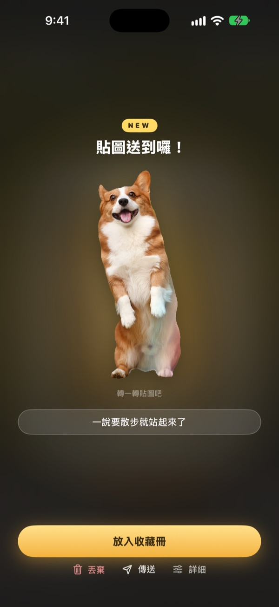
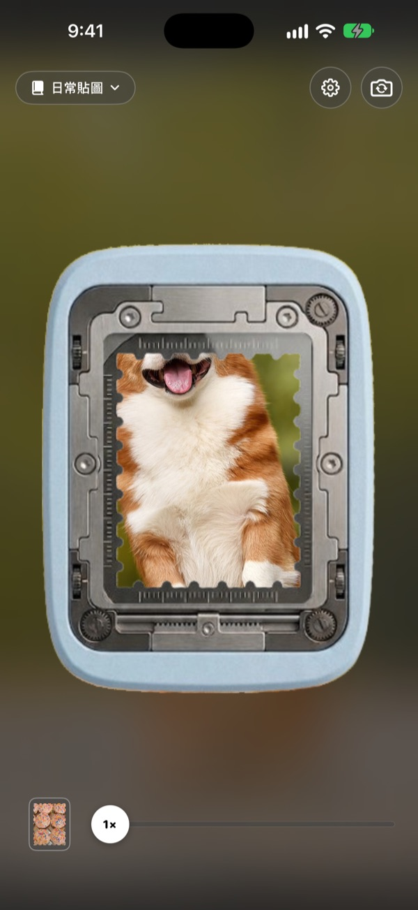
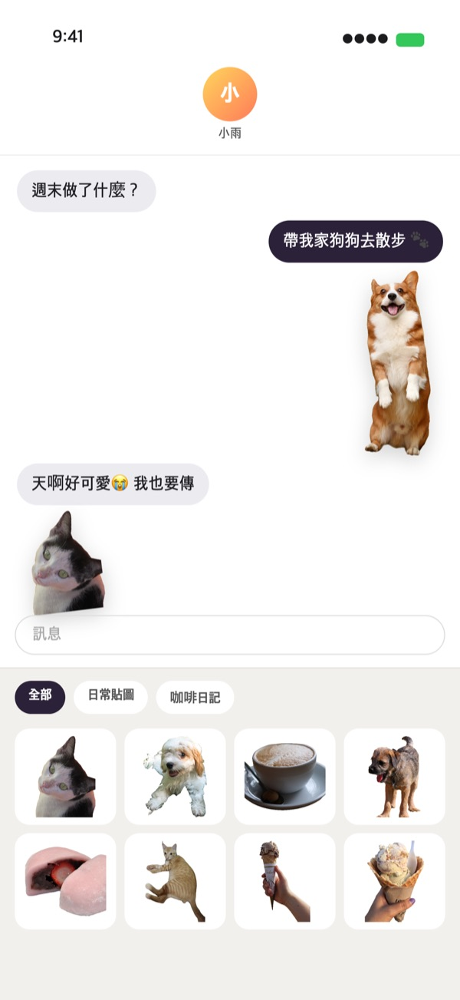
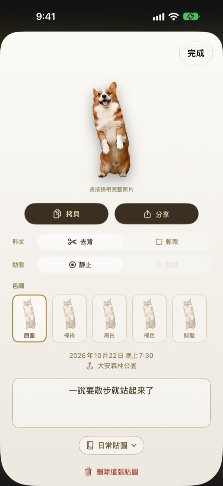
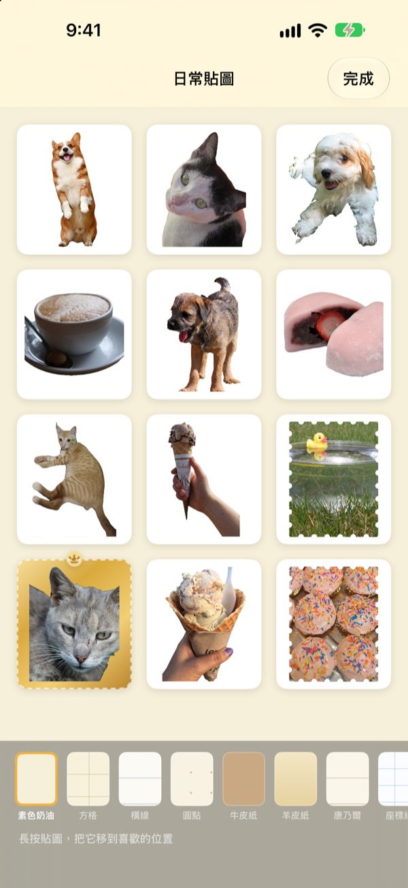

按住一下，
這一刻就成了貼圖
把畫面對準打孔窗，按住再放開。狗狗會照著狗狗的輪廓去背，按下前後那一小段動作也會一起留下。撕下的貼圖可以直接在訊息和鍵盤裡傳出去。
所有功能免費。貼圖和照片只儲存在你的裝置上。

親手撕一張看看
選一個畫面，按住打孔按鈕再放開。撕下來之後，也可以換換形狀和色調。
可愛的瞬間，總是睡在相簿裡
好不容易拍到狗狗吐舌頭，想做成貼圖傳給朋友，還得翻相簿、去背、再打開另一個貼圖 App。弄好的時候，聊天早就換了話題。Punching 在拍下的當下就撕出貼圖，放進收藏冊的那一刻，它已經在訊息的貼圖抽屜裡等著了。
主角去背，風景撕成郵票
畫面裡有人、寵物或物品這類能去背的主角，就只留下它的樣子；像風景這樣沒有主角的畫面，就撕成鋸齒邊的郵票形狀。
按下前後的一小段動作會一起記錄下來，所以貼圖是會動的。

在訊息和鍵盤裡直接用
撕下的貼圖會出現在「訊息」的貼圖抽屜裡。打開 Punching 鍵盤後，在其他 App 裡也能挑選、貼上。
會動的貼圖傳出去依然會動。按住貼圖拷貝，就能貼到任何地方。

撕下之後，形狀和色調隨時改
去背和郵票、動態和靜止，隨時切換。原始照片一直保留，改幾次都和第一次一樣清晰。
還能從原圖、棕褐、黑白、褪色、鮮豔、青藍中選色調，並留下一句話、日期和地點。

收進收藏冊，再印成紙貼紙
依主題建立收藏冊，在訊息和鍵盤裡也能依收藏冊挑選。牛皮紙、方格、橫線、羊皮紙等底紙任你選，順序也能自由安排。
還能把收藏冊做成帶郵票形狀裁切線的可列印 PDF，直接印在貼紙用紙上。

三個步驟就能開始
- 1
對準打孔窗
把想留下的東西放進相機中間的窗口。
- 2
按住再放開
放開的那一瞬間，貼圖就撕下來了。
- 3
收好，傳出去
放進收藏冊後，訊息和鍵盤裡馬上就能用。
在哪裡用，在哪裡改
- 訊息
- 輸入框旁的 ＋ ▸ 貼圖 ▸ Punching 貼圖
- 其他 App
- 開啟 Punching 鍵盤，用地球按鈕切換後挑選貼上
- 任何地方
- 按住貼圖拷貝，再貼上
- 紙貼紙
- 收藏冊的 ⋯ ▸ 使用 ▸ 可列印貼紙頁（PDF）
- 底紙和順序
- 收藏冊的 ⋯ ▸ 自由裝飾
- 以前的照片
- 在收藏冊裡點「從照片匯入」
- 預設撕取形狀
- 設定 ▸ 撕取 ▸ 預設形狀
- 顯示動態
- 設定 ▸ 顯示 ▸ 自動播放動態
- 快速開啟
- 捷徑或控制中心裡的「開啟 Punching 相機」
設定在相機畫面右上角的齒輪按鈕裡。
常見問題
貼圖不會動。
請到相機右上角的設定 ▸ 顯示，確認「自動播放動態」已開啟；再點開貼圖，看看形狀下方的「動態」有沒有打開。動態一定會一起記錄，所以隨時都能打開。從「照片」App 匯入的照片只有一張，所以不會動。
出來的不是去背，而是郵票形狀。
像風景這樣沒有可去背主角的畫面，會自動撕成郵票形狀。點開貼圖，隨時可以在「形狀」裡更改。如果想一開始就撕成郵票形狀，請到設定 ▸ 撕取 ▸ 預設形狀修改。
在「訊息」裡看不到貼圖。
請在「訊息」輸入框旁點一下 ＋ ▸ 貼圖，找到 Punching 貼圖。在 Punching 撕下至少一張貼圖後它才會出現；如果有兩個以上的收藏冊，可以依收藏冊瀏覽。詳細步驟在設定 ▸ 使用 ▸ 在訊息和鍵盤中使用。
鍵盤要怎麼開啟？
在設定 ▸ 使用 ▸ 在訊息和鍵盤中使用裡點一下「開啟設定」，然後到鍵盤 ▸ 開啟 Punching 貼圖。貼上貼圖需要「允許完整取用」，但鍵盤不會讀取或傳送你輸入的文字，也不會連上網路。之後在任何 App 裡點一下鍵盤上的地球按鈕，切換到 Punching 貼圖就行了。
想印成真正的貼紙。
點一下收藏冊右上角的 ⋯ ▸ 使用 ▸ 可列印貼紙頁（PDF）。會以收藏冊為單位產生帶郵票形狀裁切線的 300dpi 列印用 PDF，可以直接用家裡的印表機印在貼紙用紙上，也能拿去印刷店。詳細步驟請見同一選單裡的列印指南。
以前建立的合輯去哪了？
從 1.0.1 開始，貼圖統一用收藏冊來整理。每個合輯都變成同名的收藏冊，裡面的貼圖、底紙和順序也原封不動搬了過去。
狀態列亮起了綠點。
這是 iOS 的相機使用指示燈。只在相機畫面開著時亮起；打開收藏冊時相機會暫停，綠點也就熄了。
刪除貼圖會怎樣？
貼圖、原始照片和動態資料會從裝置上永久刪除，也會從「訊息」的貼圖抽屜裡消失。刪除後無法復原，請小心操作。
照片和貼圖儲存在哪裡？
全部只儲存在你的裝置上。沒有帳號，沒有我們自己的伺服器，也沒有廣告。離開裝置的只有匿名使用統計、錯誤報告，以及你主動傳送的意見回饋。詳情請見隱私權政策。
真的免費嗎？
是的，所有功能都免費。喜歡的話可以在 App 裡給開發者小費，但小費不會解鎖任何功能。
有任何問題或建議，請寄信到 leeo@kakao.com，我們通常會在 2 到 3 天內回覆。也可以到 GitHub（M1zz/StampCamera）回報問題或提出功能建議。